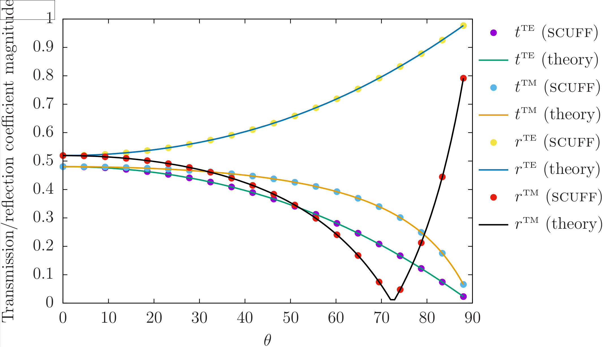

Fresnel Scattering
The FresnelScattering unit of the
scuff-em test suite
uses the scuff-transmission command-line module
to study the textbook case of Fresnel scattering: the transmission and
reflection of plane waves at a planar dielectric interface of infinite extent
in the transverse dimensions.
More specifically, we consider plane waves incident from below on a dielectric half-space of permittivity The geometry is 2D-periodic with a unit cell of dimensions m; the only meshed surface is the planar interface between vacuum () and dielectric (), described by a mesh with 40 interior edges. The incident angle of the plane wave determines the Bloch vector of the scattering problem.
The aspects of scuff-em functionality exercised by this test include the following:
Core library (libscuff)
-
Basic handling of periodic geometries. Parsing of
LATTICE...ENDLATTICEstatements in.scuffgeofiles. Processing of "straddler" basis functions in periodic geometries containing surfaces that extend across unit-cell boundaries. (libscuff/PBCSetup.cc) -
Computation of 2D periodic Green's function via Ewald summation (
GBarVDEwald.cc) and its acceleration via interpolation table (GBarAccelerator.cc) -
Assembly of system matrix for 2D Bloch-periodic geometries, including acceleration scheme involving separating contributions of innermost 9 cells from contributions of outer ("all but inner" or ABI) cells (
AssembleBEMMatrix.cc). -
Computation of scattered fields for Bloch-periodic geometries (
GetFields.cc).
libmdinterp support library:
- Instantiation and use of 2D and 3D interpolation
tables (
Interp2D.cc, Interp3D.cc)
scuff-transmission command-line application module:
-
Computation of transmission and reflection coefficients directly from surface currents (
GetAmplitudes.cc) -
Computation of transmitted and reflected power via Poynting-vector integration using scattered fields (
GetFlux.cc)
Exact solution
The situation considered here is that of a plane wave impinging from below on a dielectric half-space (relative permittivity ) filling the region . (More details on the setup for scuff-transmission calculations may be found in the document Computation of reflection and transmission coefficients in scuff-em.)
For this case, the transmission and reflection coefficients for the TE and TM polarizations read
where is the incident angle ( for normal incidence), is the index of refraction, and
scuff-em solution
The transmission and reflection coefficients for the dielectric
half-space problem are computed using scuff-transmission as follows:
ARGS="" ARGS="${ARGS} --geometry E10HalfSpace_40.scuffgeo" ARGS="${ARGS} --Omega 0.1" ARGS="${ARGS} --Omega 1.0" ARGS="${ARGS} --ThetaMin 0" ARGS="${ARGS} --ThetaMax 85" ARGS="${ARGS} --ThetaPoints 19" ARGS="${ARGS} --ZAbove 1.0" % scuff-transmission ${ARGS}
Here the file
E10HalfSpace_40.scuffgeo
describes the scuff-em geometry
(it refers to a mesh file named Square_40.msh )
and the command-line arguments ask for a calculation at
two angular frequencies ( with
rad/sec the default
scuff-em unit of angular frequency)
and at 20 incident angles in the range degrees.
Comparison
Running the above command yields the file
E10HalfSpace_40.transmission.
Plotting in gnuplot yields
a comparison of scuff-transmission data (point) to
theoretical predictions (curves):

Here is the gnuplot script that I use to produce this plot: PlotFresnelData.gp.
Unit test
The unit test is performed by running the script tests/Fresnel/TestFresnel.sh.
This runs scuff-transmission to do the calculation described above, with
results written to output file E10HalfSpace_40.transmission.
The CheckSCUFFData utility is then invoked to compare the content
of this file against the reference file E10HalfSpace_40.transmission.reference.
(To generate this reference file, run % TestFresnel.sh --reference with
no other arguments.)
The items to be checked in the comparison are defined by the checklist
Fresnel.Checklist. The unit test passes iff
all data items for all data sets agree within specified tolerances.